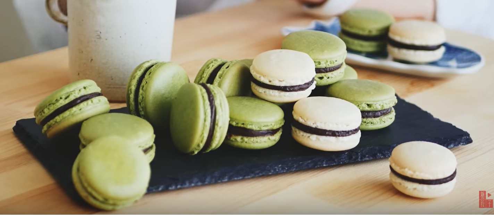

把杏仁粉、糖粉、抹茶粉倒入料理機攪打10秒鐘(目的是把杏仁粉打到更細緻，沒有料理機的話，這個步驟可以省略，不影響口感，但馬卡龍的表面有可能會比較粗糙)。
將上面的乾粉過篩，過篩要過兩次，同時建議使用很細的濾網，過好篩的乾粉備用。
接著打蛋白，蛋白打到變成白色小泡泡時，把砂糖分三次加入。
持續攪打蛋白，一直到出現小彎勾(大約是比軟性發泡硬，但還不到硬性發泡)。
將乾粉分兩次加入蛋白霜裡，以切拌法拌勻。
攪拌馬卡龍的麵糊不能太過度，拌一拌就要檢查是否有光澤，同時拉起落下時，會呈現緞帶狀，一旦有這種程度，就要立刻停止攪拌。
把麵糊倒入擠花袋，擠成大約3公分左右的圓形。
擠好後，拿起烤盤在桌面敲打，四邊都要敲一次。
以牙籤戳破剛敲打後跑出來的氣泡。
把烤盤放到乾燥的地方靜置，一直到麵糊表面結皮(天氣潮濕時，可以直接用除濕機對著烤盤吹)。
結皮後，就可以進烤箱了
烤箱設定：以160度預熱烤箱，然後以130度烤 18~20 分鐘
出爐後放涼就可以準備擠上內餡夾心。
